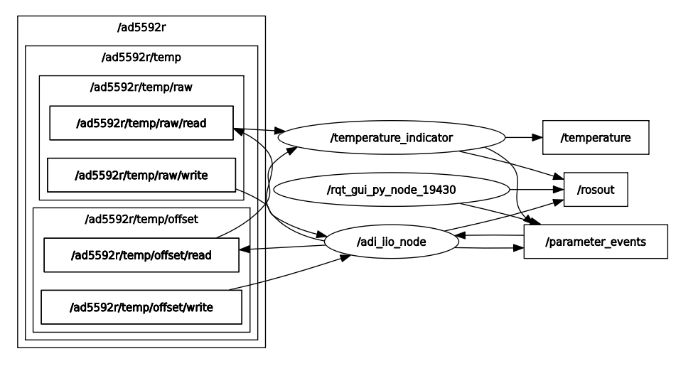
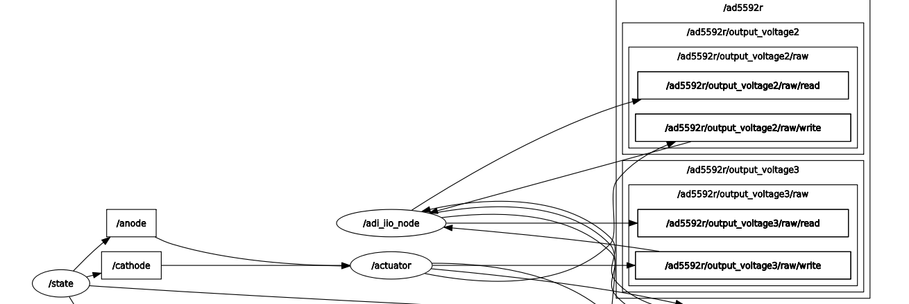

AD5592R
Prerequisites:
Raspberry Pi 4B as the remote host with Kuiper Linux Image installed.
AD5592R device tree overlay loaded on the RPi.
PMD-RPI-INTZ for HW connections.
EVAL-AD5592R-PMDZ as the IIO device.
A client running ROS2 with the
adi_iiopackage installed.A network connection between the RPi and the client.
The EVAL-AD5592R-PMDZ is connected to the RPi via the PMD-RPI-INTZ board
using the SPI Pmod #1 connector. The AD5592R device tree overlay uses
SPI CS0 to communicate with the device.
Warning
The adi_iio_node executable must be running on the client side when
running the examples.
Examples:
Configuring AD5592R Channel Attributes using AttrWriteString Service
Configuring a Single Channel Attribute via CLI
You can set a specific attribute of an IIO device channel by calling the
/adi_iio_node/AttrWriteString service. For instance, to set the scale
for output_voltage0 of the ad5592r device, you would use the following
command:
ros2 service call /adi_iio_node/AttrWriteString adi_iio/srv/AttrWriteString "{
attr_path: 'ad5592r/output_voltage0/scale',
value: '0.6103515629'
}"
- In this command:
/adi_iio_node/AttrWriteStringis the name of the service.adi_iio/srv/AttrWriteStringis the type of the service.attr_path: 'ad5592r/output_voltage0/scale'specifies the IIO device (ad5592r), the channel (output_voltage0), and the attribute (scale) to be modified.value: '0.6103515629'is the new value for the specified attribute.
This approach is useful for quick, individual changes. For initializing a device with multiple settings or for more complex setups, using a launch file is more efficient.
Configuring Multiple Channel Attributes via Launch File
The ad5592r_config.launch.py launch file demonstrates how to set the
scale and raw attributes for various input and output voltage channels
of the AD5592R device. This is useful for initializing the device to a known state.
The launch file executes a series of ros2 service call commands to the
/adi_iio_node/AttrWriteString service. For each targeted channel, it sets:
* <channel_name>/scale: Defines the scaling factor for the channel.
* <channel_name>/raw: Sets the raw ADC/DAC value for the channel.
For output channels, both scale and raw attributes are set. For input
channels, typically only the scale attribute is configured via this launch
file.
Tip
To run this launch file, execute the following command:
ros2 launch ad5592r ad5592r_config.launch.py
- This will configure the following channels on the
ad5592rdevice: output_voltage0: sets scale and raw attributes.input_voltage1: sets scale attribute.input_voltage2: sets scale attribute.output_voltage2: sets scale and raw attributes.input_voltage3: sets scale attribute.output_voltage3: sets scale and raw attributes.input_voltage4: sets scale attribute.
You can inspect the ad5592r_config.launch.py file to see the how the
service calls are structured.
Enabling AD5592R Channel Attribute Topics
The adi_iio_node can publish the values of IIO device attributes to ROS 2
topics. This allows other nodes in the ROS 2 ecosystem to subscribe to and
react to changes in these attribute values.
Enabling a Single Attribute Topic via CLI
To enable publishing for a specific attribute, you can call the
/adi_iio_node/AttrEnableTopic service. For example, to start publishing
the raw value of output_voltage0 for the ad5592r device, you would use:
ros2 service call /adi_iio_node/AttrEnableTopic adi_iio/srv/AttrEnableTopic "{
attr_path: 'ad5592r/output_voltage0/raw',
loop_rate: 1
}"
This command instructs the adi_iio_node to create a publisher for the
specified attribute. The topic name will be automatically generated based on
the attr_path (e.g., /ad5592r/output_voltage0/raw). The node will then
periodically read the attribute and publish its value.
This method is suitable for enabling topics one by one. For enabling multiple topics at once, a launch file is more convenient.
Enabling Multiple AD5592R Attribute Topics with a Launch File
The ad5592r_topics.launch.py launch file provides a way to enable topic
publishing for several raw attributes of the AD5592R device simultaneously.
This launch file executes a series of ros2 service call commands to the
/adi_iio_node/AttrEnableTopic service for various input and output channel
raw attributes.
Tip
To run this launch file, execute the following command:
ros2 launch ad5592r ad5592r_topics.launch.py
By default, this launch file sets the loop_rate for publishing to 1 Hz.
You can change the loop_rate variable in the launch file.
- This will enable topics for the following
rawattributes on thead5592rdevice: output_voltage0/rawinput_voltage1/rawinput_voltage2/rawoutput_voltage2/rawinput_voltage3/rawoutput_voltage3/rawinput_voltage4/raw
After running the launch file, you can list the available topics using
ros2 topic list:
/ad5592r/input_voltage1/raw/read
/ad5592r/input_voltage1/raw/write
/ad5592r/input_voltage2/raw/read
/ad5592r/input_voltage2/raw/write
/ad5592r/input_voltage3/raw/read
/ad5592r/input_voltage3/raw/write
/ad5592r/input_voltage4/raw/read
/ad5592r/input_voltage4/raw/write
/ad5592r/output_voltage0/raw/read
/ad5592r/output_voltage0/raw/write
/ad5592r/output_voltage2/raw/read
/ad5592r/output_voltage2/raw/write
/ad5592r/output_voltage3/raw/read
/ad5592r/output_voltage3/raw/write
Since we are dealing with input channels, the /read topics can be used to
read the current value of the attribute.
ros2 topic echo /ad5592r/input_voltage1/raw/read
You can inspect the ad5592r_topics.launch.py to see how the service calls
are made and how the loop_rate variable is used.
Transforming Raw Data to Voltage Readings
Once you have topics publishing raw attribute data, you might want to transform
this data into more meaningful units, such as Volts. The ROS 2 ecosystem
provides utility nodes like topic_tools transform that can subscribe to a
topic, apply a transformation to the messages, and republish them on a new topic.
The ad5592r_transforms.launch.py launch file demonstrates this by converting
the raw ADC readings from input_voltage2 and input_voltage3 into voltage values.
- This launch file uses
topic_tools transformto: Subscribe to the
/ad5592r/input_voltage<X>/raw/readtopics (where X is 2 or 3).Apply a formula:
volts = (raw_value * scale) / 1000. In this case, the scale is hardcoded to0.610351562, which is a typical scale factor for the AD5592R when configured for a 0-2.5V range with its internal reference (Vref/4096 = 2.5V/4096). The division by 1000 converts mV to V.Publish the result as a
std_msgs/Float64message on new topics:/ad5592r/input_voltage<X>/volts.
Tip
To use this, you would typically first enable the raw data topics using
ad5592r_topics.launch.py as described previously. Then, in a new terminal,
run the transforms launch file:
ros2 launch ad5592r ad5592r_transforms.launch.py
This will start the transformation nodes. You can then inspect the new topics:
ros2 topic echo /ad5592r/input_voltage2/volts
# Which will output something like this:
data: 0.000610351562
---
data: 0.000610351562
---
data: 0.000610351562
You can inspect the ad5592r_transforms.launch.py file to see the exact
commands and transformation expressions used.
Bringing Up the Full AD5592R Example System
To simplify the process of configuring the AD5592R, enabling its data topics,
and setting up data transformations, a top-level bringup launch file is
provided: ad5592r_bringup.launch.py. This file orchestrates the execution
of the previously discussed launch files:
Tip
To launch the complete AD5592R example system, execute the following command:
ros2 launch ad5592r ad5592r_bringup.launch.py
Note
The transform launch file is not included in the bringup process because it depends on the topics being active. If the topics are not available quickly enough, the transform launch file might fail. It is recommended to run the transform launch file separately after ensuring that the topics are active.
Creating Custom ROS 2 Nodes for IIO Device Interaction
Beyond using command-line tools and launch files, you can create dedicated ROS2
nodes in Python (or C++) to implement more complex logic involving IIO devices.
These custom nodes can act as clients to the services provided by
adi_iio_node to read, write, or stream IIO attributes and buffer data.
This approach allows for tailored applications, such as:
Implementing control loops based on sensor readings.
Performing advanced data processing and fusion.
Integrating IIO device data with other ROS 2 capabilities (e.g., navigation, manipulation).
The following examples demonstrates how to create a custom ROS2 node for different applications:
Temperature Indicator Node
The temperature_indicator.py script provides an example of a ROS 2 node that
reads the AD5592R’s internal temperature sensor attributes, calculates the
temperature in Celsius, and publishes it on a ROS 2 topic.
Purpose: The TemperatureIndicator node demonstrates how to:
Create service clients to interact with
adi_iio_node.- Read IIO attributes (
scale,offset,raw) for the temperature sensor channel (
temp) of thead5592rdevice.
- Read IIO attributes (
- Enable topic publishing for specific IIO attributes (
rawand offset) via service calls.
- Enable topic publishing for specific IIO attributes (
Subscribe to these newly enabled topics to get periodic updates.
Perform calculations using the retrieved attribute values.
- Publish the processed data (temperature in Celsius with running mean and
variance) on a standard
sensor_msgs/msg/Temperaturetopic.
Services Showcased: This node primarily utilizes the following services
from adi_iio_node:
adi_iio/srv/AttrReadString: To read thescaleattribute of the temperature sensor once at startup.adi_iio/srv/AttrEnableTopic: To requestadi_iio_nodeto start publishing therawandoffsetattributes of the temperature sensor to dedicated topics.
How to Run and Inspect:
Run the Node:
You can run the node using
ros2 run:ros2 run ad5592r temperature_indicator
You can also pass parameters, for example, to change the update rate:
ros2 run ad5592r temperature_indicator --ros-args -p timer_period:=0.5
Inspect its Behavior:
Node List: Check if the node is running:
ros2 node list
Topic List: See the topics it interacts with:
ros2 topic list # You should see /temperature, /ad5592r/temp/raw/read, /ad5592r/temp/offset/read, etc.
Echo Temperature Data: View the published temperature:
ros2 topic echo /temperature # Should return: # header: # stamp: # sec: 1747036204 # nanosec: 922183048 # frame_id: '' # temperature: 26.089715531578957 # variance: 0.12639853924376374
Node Info: Get detailed information about its subscriptions, publications, and services:
ros2 node info /temperature_indicator
Communication Flow:

Initialization:
- The node declares parameters for timer period, the
adi_iio_node service provider name, and QoS settings.
- The node declares parameters for timer period, the
It creates service clients for
AttrReadStringandAttrEnableTopic.It waits for these services to become available.
Attribute Reading & Topic Enabling:
- It makes an asynchronous service call to
AttrReadStringto fetch the
ad5592r/temp/scalevalue.
- It makes an asynchronous service call to
- It makes asynchronous service calls to
AttrEnableTopicfor ad5592r/temp/rawandad5592r/temp/offset. This tellsadi_iio_nodeto start publishing these values.
- It makes asynchronous service calls to
Data Subscription:
- The node subscribes to
ad5592r/temp/raw/readand ad5592r/temp/offset/readtopics (which are of typestd_msgs/msg/Stringas enabled byAttrEnableTopic).
- The node subscribes to
Periodic Processing & Publishing:
A timer periodically triggers a callback.
Inside the timer callback, if
rawandoffsetvalues have been received from the subscriptions, the node:Computes the temperature using the formula: temp_degC = ((raw + offset) * scale) / 1000.
Updates a running mean and variance of the temperature.
Publishes a
sensor_msgs/msg/Temperaturemessage containing the current mean temperature and variance to the/temperaturetopic.
Actuator and State Machine Example: Controlling Output Channels
This example demonstrates a more complex interaction involving two custom ROS 2 nodes:
actuator.py: A node that subscribes to voltage commands on ROS 2 topics and translates them into raw values to control output channels of the AD5592R (e.g., to drive an LED).state_machine.py: A node that generates various voltage signal patterns and publishes them to the topics theactuator.pynode listens to.
Together, these nodes showcase how one can create a system where high-level
commands (generated by the state machine) are translated into low-level hardware
control (by the actuator) via the adi_iio_node.
1. Actuator Node
The actuator.py script acts as an interface to control specific output
channels of the AD5592R.
Purpose: The Actuator node demonstrates how to:
Declare parameters for IIO attribute paths (e.g., for anode and cathode raw and scale attributes) and topic names.
Create service clients for
AttrReadString,AttrEnableTopic, andAttrDisableTopic.Use
AttrReadStringto fetch thescalevalues for the configured output channels. This is crucial for converting desired voltage levels into raw DAC values.Use
AttrEnableTopicto instructadi_iio_nodeto create<attr_path>/writetopics. This allows theActuatorto send raw values to the AD5592R by publishing to these specific topics.Subscribe to user-defined topics (e.g.,
/anode,/cathode) that carry desired voltage levels (asstd_msgs/msg/Float64).In the subscription callback, convert the received voltage (e.g., 0-2.5V) into a raw integer value (e.g., 0-4095) using the previously read
scale.Publish the calculated raw value as a
std_msgs/msg/Stringto the corresponding.../raw/writetopic (e.g.,/ad5592r/output_voltage2/raw/write).Use
AttrDisableTopicduring node shutdown to clean up the topics enabled inadi_iio_node.
Services & Topics Utilized by Actuator:
Service Clients:
adi_iio/srv/AttrReadString: To getscalevalues foroutput_voltageX/scale.adi_iio/srv/AttrEnableTopic: To enableadi_iio_nodeto exposeoutput_voltageX/raw/writetopics.adi_iio/srv/AttrDisableTopic: To disable the topics upon shutdown.
Subscribers:
topics like
/anodeand/cathode(configurable via parameters, typestd_msgs/msg/Float64) for receiving voltage commands.
Publishers:
To topics like
/ad5592r/output_voltage2/raw/writeand/ad5592r/output_voltage3/raw/write(configurable via parameters, typestd_msgs/msg/String) to send raw values toadi_iio_node.
2. State Machine Node
The state_machine.py script generates time-varying voltage signals.
Purpose: The StateMachine node demonstrates how to:
Define a sequence of states (e.g., “ANODE_RISING”, “ANODE_FALLING”, “CATHODE_RISING”, “CATHODE_FALLING”).
Generate a signal (e.g., a linear ramp from 0V to 2.5V).
In each state, publish this signal to a specific topic (
/anodeor/cathode, configurable via parameters).
Topics Utilized by StateMachine:
Publishers: To topics like
/anodeand/cathode(configurable via parameters, typestd_msgs/msg/Float64) to send generated voltage signals.
How to Run and Inspect:
Run the Nodes:
Open two separate terminals.
In the first terminal, run the Actuator node. You might want to specify which AD5592R channels are connected to your “anode” and “cathode” if they differ from the defaults (
output_voltage2andoutput_voltage3respectively).
ros2 run ad5592r actuator # Example with custom channels: ros2 run ad5592r actuator --ros-args \ -p anode_raw:="ad5592r/output_voltage0/raw" \ -p anode_scale:="ad5592r/output_voltage0/scale" \ -p cathode_raw:="ad5592r/output_voltage2/raw" \ -p cathode_scale:="ad5592r/output_voltage2/scale"
Tip
With the
actuatornode running, you can publish data to one of the topics which will be converted to a raw value and sent to the channel. For example:ros2 topic pub --once /cathode std_msgs/msg/Float64 "data: 2.5" ros2 topic pub --once /anode std_msgs/msg/Float64 "data: 0"
In the second terminal, run the StateMachine node. You can adjust the state_period to control how long one full cycle of all states takes.
ros2 run ad5592r state_machine --ros-args -p state_period:=4.0
Inspect its Behavior:
Node List:
ros2 node list # You should see /actuator and /state
Topic List & Echo: Observe the topics used for communication.
ros2 topic list # You should see /anode, /cathode, /ad5592r/output_voltageX/raw/write, etc. ros2 topic echo /anode # See the voltage commands from the StateMachine ros2 topic echo /ad5592r/output_voltage2/raw/write # Or your configured anode raw write topic # See the raw string values sent by the Actuator to adi_iio_node
Node Info:
ros2 node info /actuator ros2 node info /state
Hardware Observation: If you have an LED or oscilloscope connected to the AD5592R output channels being controlled, you should see its behavior change according to the patterns generated by the
StateMachine.
Combined Operation & Communication Flow:

Initialization:
The
Actuatornode starts, reads thescalefor its configured output channels (e.g.,output_voltage2andoutput_voltage3) fromadi_iio_nodeusingAttrReadString.The
Actuatorthen requestsadi_iio_node(viaAttrEnableTopic) to allow writing to therawattributes of these channels by publishing to topics like/ad5592r/output_voltage2/raw/write.The
Actuatorsubscribes to/anodeand/cathodetopics for voltage commands.The
StateMachinenode starts and prepares to publish to/anodeand/cathode.
Voltage Command Reception & Actuation (Actuator):
The
Actuatorreceives the voltage value on its/anodesubscription.It converts this voltage to a raw DAC value.
It publishes this raw value as a string to
/ad5592r/output_voltage2/raw/write.
Hardware Update (adi_iio_node):
adi_iio_nodereceives the string on/ad5592r/output_voltage2/raw/write, and writes it to the actual IIO device’srawattribute foroutput_voltage2. If an LED is connected to this channel, its brightness would change.
This example illustrates a decoupled system where one node is responsible for high-level behavior generation and another for low-level hardware interfacing, communicating via standard ROS 2 topics and services.